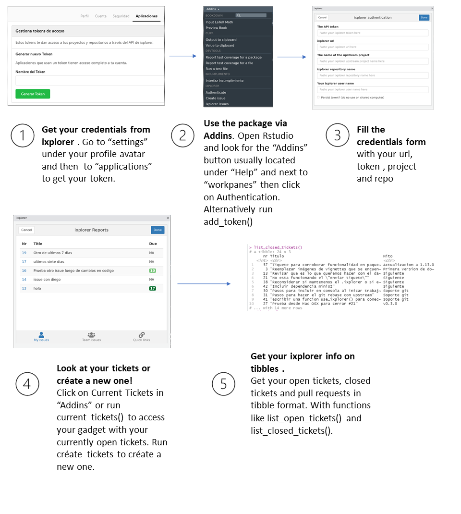

This vignette has the purpose of showing you a quick overview of the workflow with the ixplorer package.
The goal of this package is to allow you to access information from the ixplorer git self hosted service quickly and easily from within RStudio. This means you can view the tickets assigned to you or to your team while you code, as well as all the tickets in your repository. You also gain access to your open pull requests. Additionally, it allows you to quickly perform some day-to-day git version control-related functions, such as updating the master branch of your fork, setting a time period to keep your credentials on a remote server, and publishing a wiki more easily.
Below we show a general guide of how ixplorer works the first time you use it.

The fist step is to get credentials from ixplorer, then you use the authentication function to identify yourself, with this step you are giving the necessary information so that the ixplorer package can get you your tickets.
If this is not your first time using ixplorer, use the ixploring tab in the authentication gadget to move between your saved instances and repos.
Once you are finished you can delete your credentials if necessary using delete_credentials(). This is particularly recommended when you are using a shared computer.
Overall you will be able to:
Visit the additional vignettes to get more information about how to use this package.